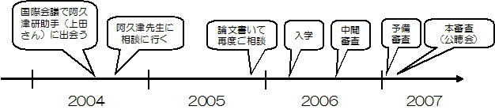

もどる
（か）研究日記 番外編 ～働きながら情報学分野で学位をとる～
社会人博士課程で学位をとるまでの道のり、感想などをまとめます。
が、一般性のある情報であることは保証しません。
あと、「なぜ学位をとるのか」という問いについては、いまのところ考察しません。
（ほかにも何か思い出し次第アップデートします）
- サマリー：
- 2006年4月から2007年3月にかけて京大情報の阿久津研に社会人博士課程としてお世話になり、博士（情報学）の学位をいただきました。
- 指導は基本的にメールで。 実際の通学は平均して1－2ヶ月に1回くらいのペースでした。
- 内容は、だいたいジャーナル2本＋α分くらいという感じです（あくまで目安）。
- 費用は、いろいろあわせて約100万円くらいかかりました。（一部会社負担）
- なんらかの理由で出身研究室で博士課程の受け入れが困難な場合、課程そのものの内容よりも、お世話になる先生を探すまでの過程のほうが大変です。
- 入学先：
- 学位取得までの道のり：

- 2004年 仕込み：どこの博士課程に行くかが決定するまで
- そもそも自分は、出身研究室の教授が定年退職されてしまうため、出身研究室で取得というのができない状態でした。
また、この時点では筆頭著者でのジャーナルを1本も書いていなかったため、論文博士で学位を…というのも厳しいなあと感じていました。
- 7月に参加した国際会議（ICML）で、阿久津研の（元）助手 上田さんと知り合いになりました。
おりしも、上田さんたちの発表内容は(僕が前の年のICMLで発表した)グラフカーネルの拡張についてということであったので、ここはチャンス！と無理を言ってお願いして阿久津先生に取りついでいただくことに。
- 阿久津先生のところに学位取得指導のお願いにあがり、快く引き受けていただくことができました。
具体的な話はジャーナルをもうちょっと書いてから…ということで、一旦、潜伏。
とりあえず、これまでの会議発表済みの論文を、確実性の高いところ（国内論文誌）に投稿します。
- 一般に、工学部を含む多くの学部では、国際会議の予稿集は正式な研究業績としてはあまり重視されません。 これは、学位をとるモチベーションが今後アカデミックな世界に行くためであった場合にも、心に留めておくべき重要な点であると思います。
（情報関係分野の一部では、難関国際会議での論文発表はその辺のジャーナルよりもずっと難しいため、その予稿集は高く評価されるのですが、その文化は業界全体からみるとかなり特殊な状況であるため、
人事的な決定が専攻・学科・研究科など大きな単位になるに従い、その常識は通用しなくなってくる恐れがあります。）
- 2005年
- ジャーナルが2本（JSAI＆IEICE）受理されたので、年末に再度ご相談にあがり、次年度から課程に入学する方向で話がまとまる。
- ちなみに、ジャーナルの内訳は、D論に入った論文が１本、関係ない（仕事関連の）論文が１本でした。
- 2006年
- 2月 入試
- 英語と記述試験。 英語は、同じ大学の修士課程出身なので免除（この辺の基準は不明）。 記述試験は研究室ごとの出題で、研究室の研究分野に関連する記述（自分の場合、バイオインフォマティクス関連）。
- 専攻の先生方を前にプレゼンテーション（約10分）。これまでの研究と課程での研究計画をまとめる。
(使用した発表資料)
- 4月、入学
- 約1～2ヶ月に1回くらいのペースで通学。 先生とのコミュニケーションは主にメールで。
- 健康診断とかもあったりする。 最近胃が痛いとか、いちおう相談してみるけどテキトーにあしらわれる。
- 8月 中間審査
- 専攻の先生方を前にプレゼンテーション。ここで今年度に本審査を受けられるか（＝学位論文を書いてよいか）がきまる。
(使用した発表資料)
- 入ってからの成果がないとのことで、ちょっと微妙な状態 → ちょうどICDMにアクセプトでめでたく解決。これの日本語版にあたるものを人工知能学会のジャーナルに投稿。
（注：このあたりの慣習は分野によって変わるので注意が必要。近年の研究倫理厳密化の流れで、どんどん厳しくなっていくものと思われます。）
- 指導教員の共著について： 自分の場合は結果的には無しでいったことになりますが、一般的にはあったほうが良いと思います。
- 2007年
- 1月 予備審査
- 審査委員の先生方（3名）を前にプレゼンテーション（1～２時間）。 (使用した発表資料)
- 頂いたコメントをもとに修正。意外なほどたくさんのコメントを頂け、大変ありがたい…。
- しかも内容に穴がみつかり（[研究成果 ４] のEMっぽいところがEMじゃない疑惑）、なんとか埋める（むしろ田中先生に埋めていただく…）。
- 2月 本審査 （いわゆる公聴会）
- 審査委員の先生方（3名）の他には、お客さんは数名でした。 (使用した発表資料)
- 前の2つと比較すると、こちらはあまり厳しくないというか、予備審査での問題が解決されているかの確認という感じが強いと思います。
- 3月 製本、提出そして修了
- できたのがコレ。
- 学位記もらう会には行けませんでした。 後日、事務室で受け取る。 でかい。
学位記は実家に送る（← この手のものを一番喜んでくれるのは両親や祖父母です、もしもあなたが見せてあげられる状況にあるのならばそれは運のよいこと。ぜひに。）
- お金について：
- かかったお金はざっくり以下のような感じ。（授業料などの額について詳しくはこの辺から辿る資料を参照）・
- 学費
- 入試に約3万円
- 入学金約30万円
- 授業料約55万円/年
- そのほか
- 交通費（遠い場合）往復3万円×6～7回=20万円
- 論文の印刷 約5万円
- おやつ代（麩饅頭買って帰ったりとか）
- 会社（TRL）からの補助制度を利用して、授業料はカバーされた（約50万円）。
- 博士論文の内容：
- 博士論文に含めた内容は、ジャーナル２本、国際会議４本 （含めた以外の論文も、中間審査時点での評価「こいつに学位論文を書かせていいのか」の判断には関わると思われます）
- 国際会議の論文だけでは十分ではなく、やはりジャーナル論文は必要。
- 自分の専攻では、ジャーナルの国内・国外の別はそれほどは無いもようでした。 良し悪しというよりは、研究の結果をきちんとまとめて論文の形として出せているという事実のほうが重要な気がします。
- 指導教員との共著が必要かどうかは、専攻やそのときの状況によると思います。
僕の場合は無しでも大丈夫でしたが、これが一般的であるとは言えません。 内容が分野的に研究室や専攻のスコープとマッチしているかによっても、状況が変わってくると思います。
一般的には、あったほうが良いと思います。
- つまり、合格の要件に関しては、なにか決定的な基準があるというよりも、イロイロなことを決める教授の集まりにおいて、担当の教授が僕のことを守るために戦ってくださるわけですが、そこで他の先生から異論が出るかどうか、それを説得できるかに依存するということだと思います。
そして、自分がそれに対する材料をどれだけ提供できるかということなのだろうと思います。
- ちなみに、内容は、以下のとおり。
- タイトル： 構造データ解析のための機械学習法の研究
- 構造をもったデータを効率的に解析するための機械学習手法を研究しました
- 特にカーネル法とよばれる手法を用いた構造データの解析手法に貢献しました
- [研究成果 １] ラベル付順序木カーネル
- 順序木に対する効率的なカーネル関数の設計
- 一般の木に対する計算困難性の証明
- [研究成果 ２] グラフ・カーネル
- [研究成果 ３] ラベル付けカーネルマシン
- また、生体ネットワークなどのネットワーク構造の解析手法の研究を行いました
- [研究成果 ４] ネットワーク構造進化モデルに基づくリンク予測
- ネットワークの構造進化モデルに基づく、リンク予測の枠組みの提案
- 近似EMアルゴリズムによる効率的な学習アルゴリズム
- 論文の印刷（製本）について：
- 最終的にできたやつを製本しないといけません。 自分の専攻の場合、3冊を提出しないといけないので、最低3冊＋お世話になった方々＋お世話になりたい方々の分。
僕はとりあえず、足りなければあとで足せばいいやということで15冊ほど印刷しました。
- 久保山先生に教えていただいた、ここで、やわらか表紙で35000円ほどかかりました。
- お急ぎコースがあるところもあるが、だいたい1週間強くらいはかかるようです。
- 出身研究室がすでに無い場合：
- 元指導教員が退職されるなどによって、血筋を失ってしまった場合、なかなかお願いできる先生をみつけるのは簡単ではないです。
知り合いのツテでもコネでも、まずはお願いのできる先生をみつけましょう。
- もし、自分の出身研究室の先生がまだ大学にいらっしゃるのなら、多少分野違いになってしまっていても、お願いするのが得策だと思います。
- 国際会議での発表は、直接学位をとるためのカウントにはあまり役に立たないかもしれないけど、原則「いいところに行けば、いい人に出会える」ということだと思います。
また、分野で名を売る（実力以上にでも）のは大切。 社交活動しましょう。
ちなみに、このサイトの掲載内容は私自身の見解であり、必ずしもIBMの立場、戦略、意見を代表するものではありません